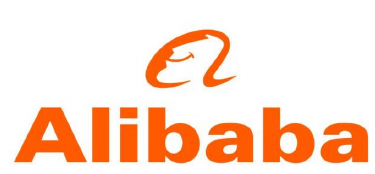
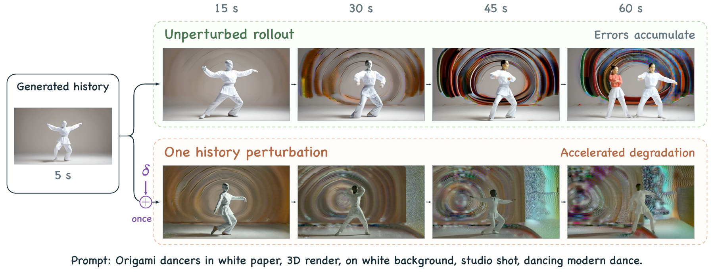
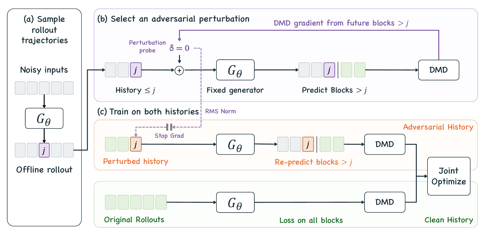
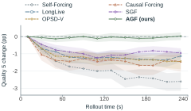
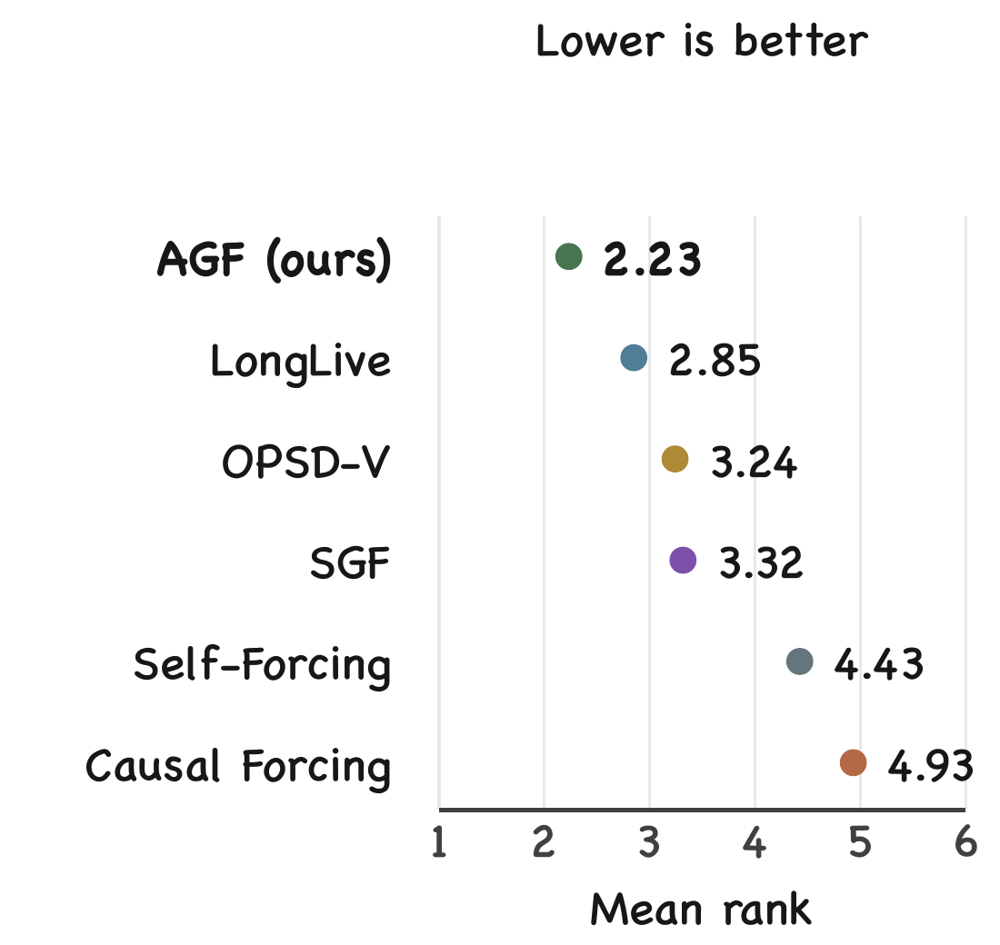
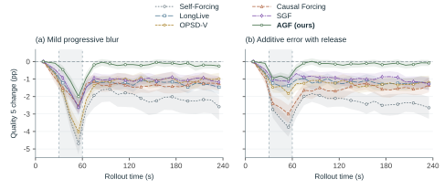

Adversarial Gradient Forcing
for Robust Few-Step Autoregressive Video Generation
AGF mitigates error accumulation in few-step autoregressive video generation by training models to withstand adversarial history perturbations. Trained on only five-second rollouts, AGF sustains high-quality video generation for four minutes.

Four-minute continuations of the same prompt. AGF preserves the child’s appearance and the surrounding scene throughout generation.
Explore the videos* SGF: reproduced from the same ODE initialization as AGF, using its official training settings. † OPSD-V: the official checkpoint post-trained from Self-Forcing.
Long-video comparisons
Twenty prompts, six methods, four minutes of generation. Explore how appearance, motion and scene structure evolve over time.
1× · original speed
About the videos
Each video contains the full generation, presented at 624 × 360 and 16 fps. Playback defaults to 1× (original speed); faster rates are available in each case’s controls. Controls apply to one comparison at a time.
Abstract
Autoregressive video generation models generate videos sequentially, with each new block conditioned on previously generated blocks. By training on the model's own rollouts, Self Forcing and its follow-up methods substantially mitigate exposure bias caused by the mismatch between training- and inference-time history distributions. However, these models still suffer from error accumulation during long-horizon generation. We identify a key underlying limitation: the model remains highly sensitive to errors in its generated history, allowing small deviations to be amplified through subsequent generations. We refer to this underexplored problem as the local history robustness gap.
To address this gap, we introduce Adversarial Gradient Forcing (AGF), a framework designed to improve the robustness of few-step autoregressive video models to perturbations and accumulated errors in their own generated histories. AGF uses distribution matching gradients from future block predictions to select adversarial perturbations of self-generated histories. It then jointly trains the generator on the original and perturbed histories to improve the robustness of future generation. Extensive experiments show that AGF achieves the highest VBench Total score on 60-second video generation and the best visual quality on four-minute video generation. Notably, AGF achieves such long-horizon robustness while requiring only 5-second rollouts for training.
The local history robustness gap
Every generated block becomes context for the next one. Training on self-generated rollouts narrows the mismatch between training and inference, but it does not necessarily teach a model to recover after its history has become imperfect. Small deviations can still be amplified through later predictions: this is the local history robustness gap.
The controlled example below keeps the model and future sampling randomness fixed. A one-time perturbation to one history block causes artifacts to emerge earlier and grow more severe. AGF targets this sensitivity directly by training on histories selected for their effect on future generation.

Adversarial Gradient Forcing
AGF learns to continue from imperfect context by constructing small history perturbations that are especially harmful to future predictions. Distribution matching gradients provide the signal for selecting these perturbations. The model then learns from the clean history and its adversarial counterpart together.

On-policy rollout
The generator produces a five-second rollout using its own predictions as history. The trajectory is recorded without retaining the full computation graph, and one history block is selected for perturbation.
Adversarial history selection
DMD gradients from blocks after the selected history block identify a direction that worsens the subsequent generation. AGF takes a bounded, RMS-normalized step in this direction, producing a challenging history for the model to learn from.
Joint distillation
With the perturbation fixed, the generator is trained jointly on the clean and adversarial histories. During early training, a prediction consistency regularizer aligns the first-step velocity predictions under the two histories, helping preserve global scene structure. The regularizer is then removed for the remaining training. At inference, AGF retains the original four-step sampler and adds no perturbation-selection procedure.
Long-horizon performance
We evaluate six methods at 5 seconds, 60 seconds and 240 seconds using 944, 240 and 120 prompts, respectively. AGF remains competitive on short videos and achieves the highest 60-second VBench Total and four-minute Quality 5. Human evaluation also favors AGF, with the best mean rank across 240 ranking tasks.
| Method | 5 seconds | 60 seconds | 240 seconds | ||
|---|---|---|---|---|---|
| Total ↑ | Quality ↑ | Semantic ↑ | Total ↑ | Quality 5 ↑ | |
| Self-Forcing | 82.21 | 82.95 | 66.01 | 79.56 | 82.47 |
| Causal Forcing | 82.94 | 83.82 | 63.88 | 79.83 | 81.79 |
| LongLive | 80.34 | 82.11 | 70.59 | 79.81 | 83.62 |
| SGF | 82.08 | 83.56 | 64.09 | 79.67 | 84.07 |
| OPSD-V | 81.95 | 83.16 | 67.67 | 80.06 | 82.84 |
| AGF (ours) | 82.03 | 84.67 | 68.66 | 81.47 | 84.82 |
Quality 5 (Q5 in the paper) averages subject consistency, background consistency, motion smoothness, aesthetic quality and imaging quality. It excludes Dynamic Degree and is not the official VBench overall score.
Quality across the full rollout

Human preference · mean rank

Robustness to history errors
We test whether robustness learned during training transfers to temporary errors at inference. All six methods are evaluated on 120 prompts. Either mild progressive blur or an additive error is applied to newly generated history blocks from 30 to 60 seconds. The intervention then stops, and generation continues to four minutes. The saved video frames themselves are not edited.

All methods lose quality during the intervention and recover after it ends, but AGF returns closest to its initial level. Over 90–240 seconds, AGF’s mean Quality 5 change is −0.17 percentage points after blur and −0.13 after additive error. The corresponding ranges for the five baselines are −2.10 to −1.03 and −2.31 to −1.01 percentage points. These trajectories reflect both natural quality drift and the effects of the temporary intervention.
Cite this work
@misc{xia2026adversarial,
title = {Adversarial Gradient Forcing for Robust Few-Step
Autoregressive Video Generation},
author = {Chenxi Xia and Yixuan Xu and Shan Liu and Jiapeng Wang
and Maohua Li and Hanlin Tang and Kan Liu and Tao Lan
and Weiyi Lu and Xinggao Liu},
year = {2026}
}